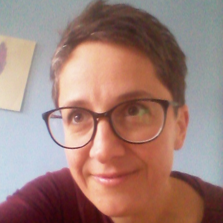

Katarzyna Opielka
Prpjektmanagerin, Workshopsleiterin
Ich bin Managerin und Autorin von Kulturprojekten, Pädagogin,
Soziologin und studierte Deutschlehrerin.
Vertiefte Bildung, Offenheit für andere
die Suche nach Gemeinsamkeiten in der Vielfalt
und in nicht offensichtlichen Zusammenhängen
sowie eine Prise Humor - das ist mein Ansatzpunkt
in der Zusammenarbeit mit anderen. Ich kreiere Projekte,
die sich auf die weit verbreitete Kultur
und Philosophie des täglichen Lebens beziehen –
sie sind für mich auf vielen Ebenen eine Inspiration.
Täglich arbeite ich mit Schulen, Kultureinrichtungen,
Bildungs- und Forschungszentren, Nichtregierungsorganisationen
und kommerziellen Einrichtungen in Polen
und im Ausland zusammen. Darüber hinaus leite ich selbst
konzipierte Workshops zu den Themen Multikulturalismus,
Akzeptanz und Integration, kulturelle, religiöse und sprachliche
Vielfalt, Menschenrechte, polnisch-deutsche Zusammenarbeit,
polnisch-jüdisch-deutsches Kulturerbe und die Besonderheit
von Grenzregionen. Bei der Leitung von Workshops habe ich
den Grundsatz des chinesischen Philosophen Konfuzius als Leitfaden:
"Sage mir und ich vergesse, zeige mir und ich erinnere mich,
lass mich tun und ich verstehe."
Ich lebe und entdecke Schlesien und spiele von Zeit zu Zeit
die Rolle einer Reiseführerin, nicht nur für die allseits beliebten
Orte dieser multikulturellen Region, die von Touristen
und Reisenden besucht werden, sondern auch für jene
unscheinbaren Ecken und Winkel, die vielleicht nur den
Liebhabern der lokalen Geschichte bekannt sind.
Ich stelle auch Anträge bei entsprechenden Finanzierungsquellen,
um sozial und kulturell interessante Projekte sowohl in Polen
als auch im Ausland zu realisieren.

Jan Opielka
Publicysta i dziennikarz
Ich bin Kolumnist und Journalist. Ich beschäftige mich
mit Themen der Politik, Kultur, Gesellschaft,
Ich schreibe für deutsch- und polnischsprachige Pressemedien
gestalte Radiosendungen, spreche bei öffentlichen
Diskussionen und Vorträgen sowie Internet-Podcasts.
Ich habe Politik und Englisch als Lehrer-Anwärter studiert
– aber es waren die Politik und das Schreiben,
die mich letztlich angezogen haben.
Was leitet mich in meiner journalistischen und öffentlichen Arbeit?
Ich versuche, mich an den journalistischen Ethos zu halten
den der deutsche Publizist und Gründer des Magazins
"Der Spiegel", Rudolf Augstein einmal auf den Punkt gebracht hat:
"Schreiben, was ist."Scheinbar einfach in der Realisierung,
doch die Wirklichkeit ist kompliziert. Denn: „Was ist? Wie ist es?
Und was davon, das sichtbar und real ist, ist wirklich wichtig?
In der medialen oder journalistischen Realität erwächst
aus diesen Fragen der Vielgestaltigkeit und Vielfalt die Notwendigkeit,
ein und denselben Sachverhalt oder ein Thema aus verschiedenen
Perspektiven zu betrachten. Es gilt, die lästige Floskel zuzulassen:
"Ja, aber. . . " Denn die Realität ist fast nie Null zu Eins
sie ist nicht schwarz-weiß, mehr noch, erst in ihrer Vielfarbigkeit
liegen all die kleinen Wahrheiten, die wir manchmal erfahren können.
Journalistische Arbeit hat den beispiellosen Wert, den Diskurs
und den Dialog im öffentlichen Raum mitzugestalten der so grundlegend
für die Schaffung einer gut verstandenen Gemeinschaft ist.
Mein eigenes bescheidenes Stück hinzuzufügen –
das ist die Motivation und auch das Ziel, das ich zu verfolgen versuche.
Oferta
- Tłumaczenia polsko-niemieckie
- Język niemiecki na co dzień
- Język niemiecki w zawodzie i biznesie
- Praca z mikrofonem
- Projekt szyty na miarę
- Praca z piórem
- Warsztaty dla dzieci (5-6 lat)
- Warsztaty dla młodzieży (13-18 lat)
- Wakacje z kulturą
Porozmawiajmy o Twoim pomyśle!
Skontaktuj sięAtlas projektów
- Fundacja Różnorodności i Równości Kontrasty
- Skarbnica wiedzy
- Mapa tożsamości Żor
- Śladami Żydów z Górnego Śląska
- Industriada 2018 w EC Szombierkach w Bytomiu
- Animacja społeczna w projekcie „Trasa 78”
- Zaczęło się od animacji
- Akceptacja podal dalej!
- Poczuj na własnej skórze
- Uchodźcy, migranci, obcy
- Węgiel a energia
- Akademia Dziennikarska
- Cała prawda – ale która?
- Heroiczny nacjonalizm, bohaterska solidarność
- Podróż pociągiem w stanie pandemii
- Polska na rozdrożu, analiza przedwyborcza (październik 2019)
- Niemiecki Flirt ze skrajną prawicą
- Testament. Upomnienie. Opary mgły.
- Tłumaczenie publikacji: Śladami Żydów z Górnego Śląska
- Autor książki popularnonaukowej
Referencje
- VHS Marburg
- Studienkolleg Marburg e.V.
- Muzeum w Gliwicach
- Muzeum Miejskie w Żorach
- Gliwickie Centrum Organizacji Pozarządowych
- Spółdzielnia Mieszkaniowa „Stare Łabędy”
- Zespół Szkół FILOMATA
- DGB Bildungswerk Hessen
- Clean Energy Wire (CLEW)
- Domu Współpracy Polsko-Niemieckiej
- Fundacja Współpracy Polsko-Niemieckiej
- Niemiecki Instytut Polski
- Freitag
- Frankfurter Rundschau
- Berliner Zeitung
- Jüdische Allgemeine
- Publik Forum
- Wochenzeitung (Szwajcaria)
- Furche (Austria)
- Dzienniku Opinii (Krytyka Polityczna)
- tygodnik Przegląd
- miesięcznik Charaktery
- magazyn muzyczny Lizard
- portalu Nowy Obywatel